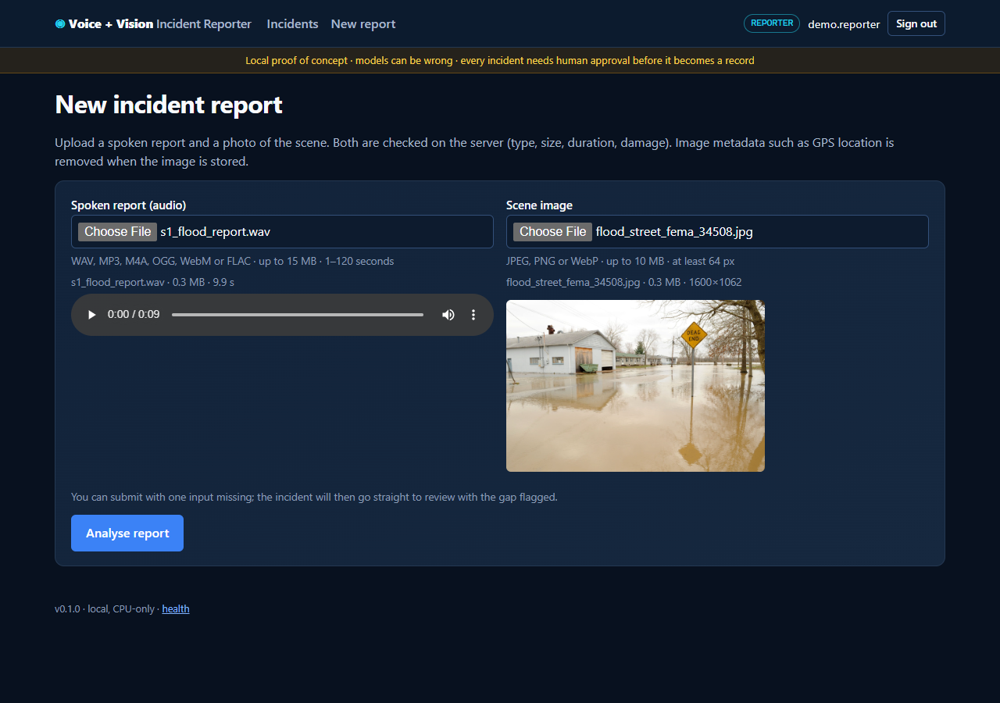
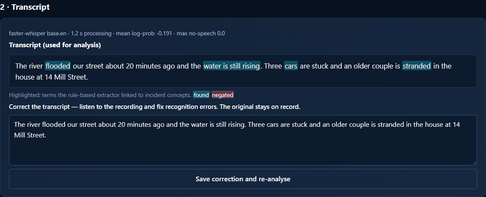
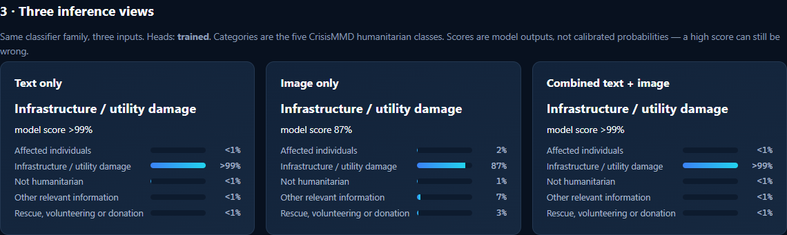
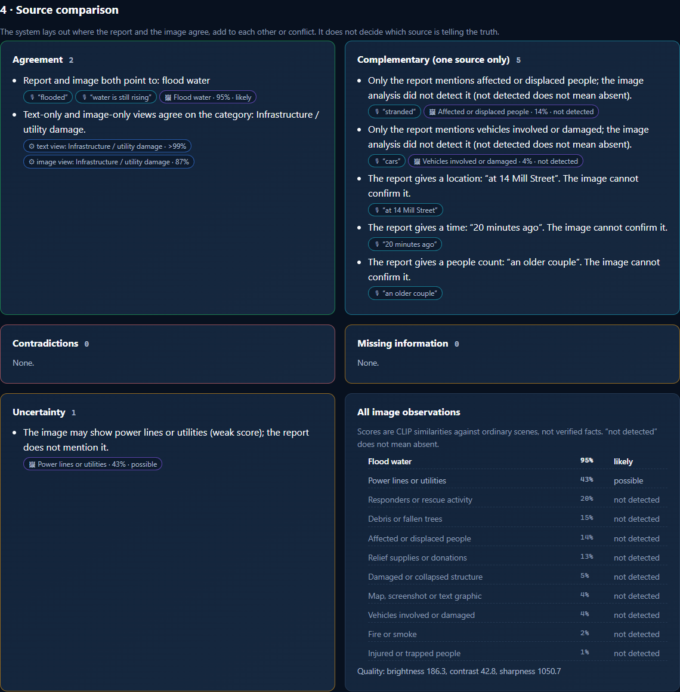
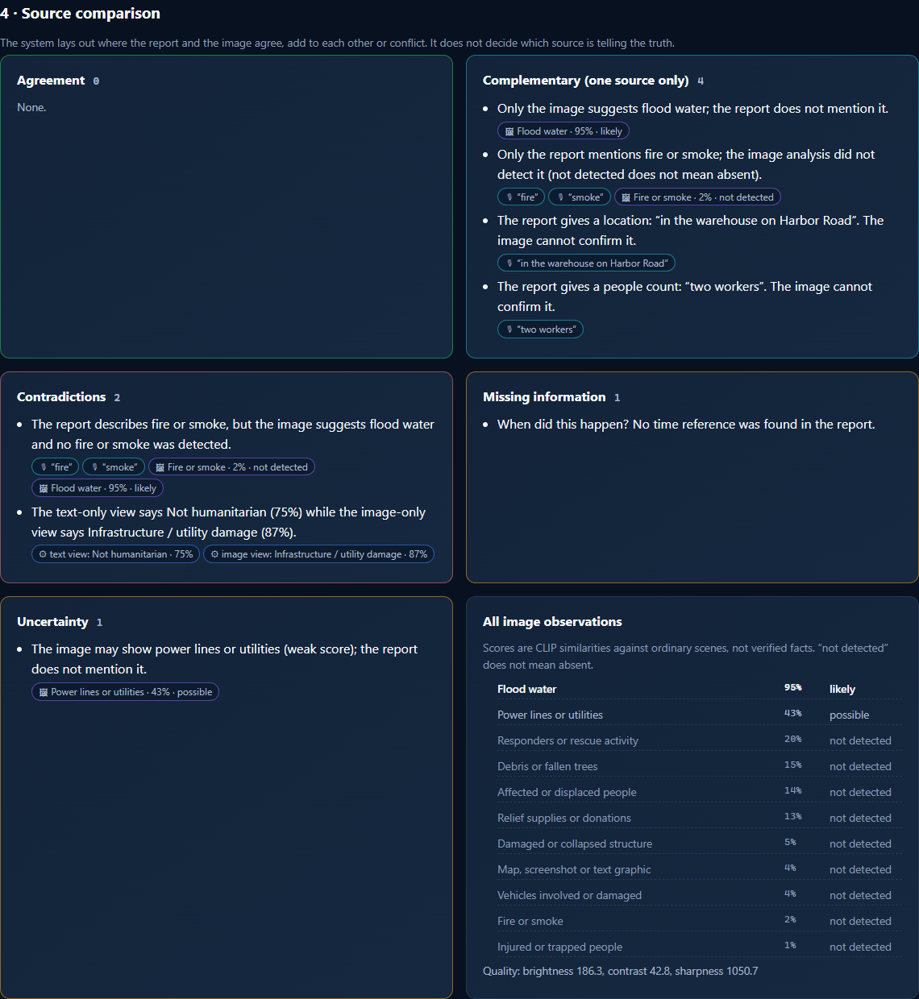
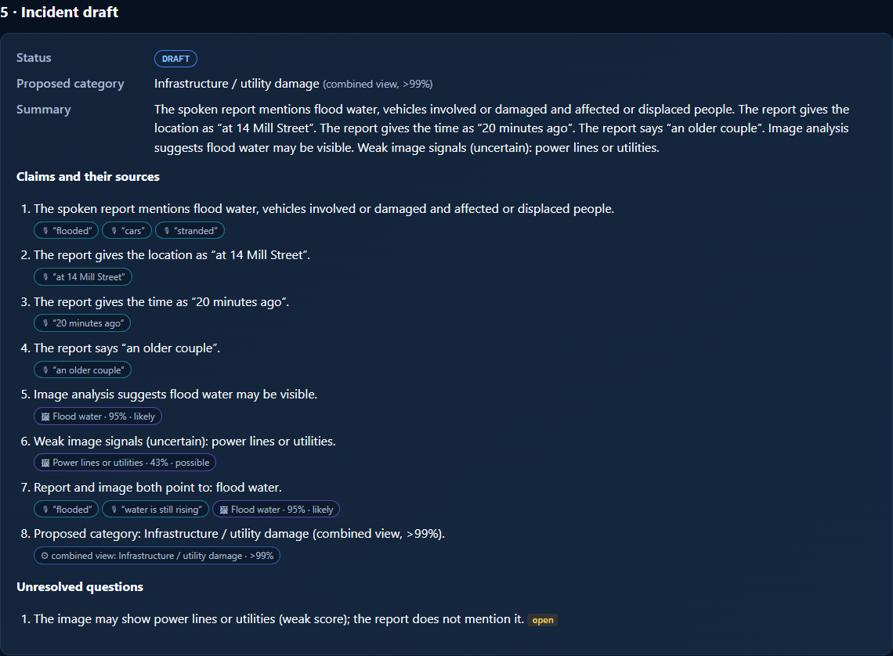
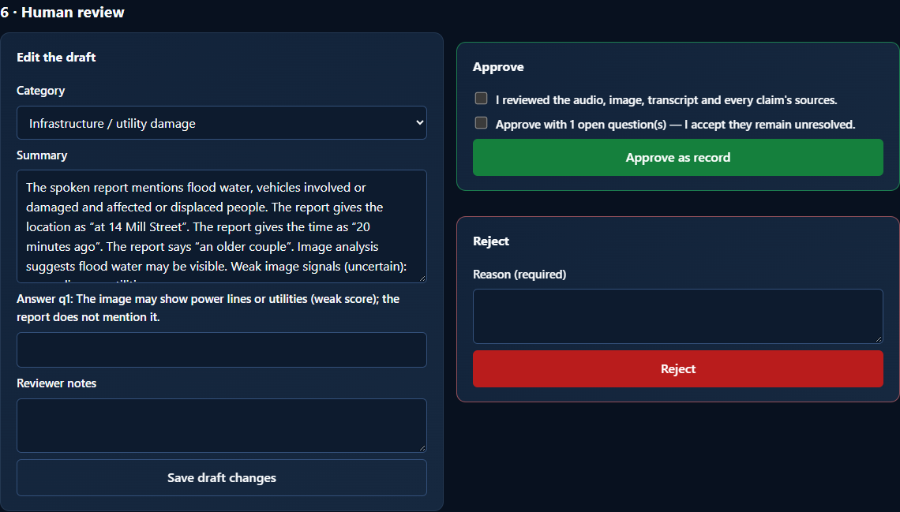

Voice + Vision
Incident Reporter
A spoken report and a photo go in. A transcript, an image analysis, three inference views, a side-by-side comparison of the two sources and a traceable incident draft come out — and nothing becomes a record until a person reviews it and explicitly approves it.
Two things, kept apart: the research comparison uses genuine text–image posts (CrisisMMD) and follows the papers below; speech transcription, conflict handling, drafting and approval are our own extensions, evaluated separately. The papers establish nothing about voice reports.
Two sources, each fallible
Incident reports increasingly arrive as a voice note plus a phone photo. Fusing them into one confident answer hides exactly what a duty officer needs to see.
Speech gets misheard
In our noisy test clip the recogniser heard “14 Mill Street” as “14 years” — and stayed confident. The location silently disappeared.
Photos are partial
An image can be old, reposted or from elsewhere. “Not detected” in a photo is not evidence of absence — so the system never treats it as a contradiction.
People must decide
When the report says “fire” and the photo shows a flood, the system lists both sides and asks. Only a reviewer — not the reporter — can approve a record.
From voice note to approved record
Screenshots of the running application (local, illustrative inputs: fictional report in a synthetic voice, public-domain FEMA photo of an unrelated event).
-
01
Upload a voice report and a photo
Type, size and duration are checked in the browser and again on the server, where both files are fully decoded; image metadata such as GPS is removed before anything is stored.

-
02
Transcribe — and let a person correct it
Whisper base.en runs locally. Terms linked to incident concepts are highlighted. Corrections re-run the analysis; the original machine transcript is kept for audit and evaluation.

-
03
Three inference views
Text only, image only, and combined text + image — the same classifier family over frozen CLIP embeddings, so the views can be compared directly. Scores are model outputs, not calibrated probabilities.

-
04
Compare the sources, don't merge them
Agreement, complementary details, contradictions, missing information and uncertainty — each with the transcript words, image scores or model outputs behind it. Weak image signals are marked as uncertain.

-
05
Conflicts are shown, not resolved
A report of a warehouse fire with a photo of a flooded street: both sides are listed and the draft asks the reviewer which account is correct. The incident goes straight to review.

-
06
A draft where every claim has a source
Proposed category, summary, claims with source chips and unresolved questions. Nothing here is a record yet.

-
07
Human review
A reviewer edits the category or summary, answers open questions, confirms the evidence and approves — or rejects with a reason. The reporter cannot approve their own incident.

-
08
An approved, immutable record
Approval creates a hashed record naming the reviewer; every step is in an append-only, hash-chained audit log.


Three paths, identical test examples
Does combining text and image classify incidents better than either alone? One learner, three inputs, the same 955 held-out CrisisMMD posts, a protocol frozen before any run.
Frozen CLIP text embedding of the post (or, in the app, the transcript) → logistic regression.
Frozen CLIP ViT-B/32 image embedding → logistic regression.
Both embeddings concatenated (early fusion) → logistic regression. The primary model.
- Data: CrisisMMD v2.0, official agreed-label humanitarian split — 6126 train / 998 dev / 955 test pairs, 5 classes (text and image labels agree).
- Primary metric: Macro F1. Success: combined beats the best single source with a 95% paired-bootstrap CI above 0.
- No leakage: hyperparameters chosen on dev only; the test set is scored once; the 209 test pairs whose image or text near-duplicates training data are also analysed separately.
- Secondary: late fusion, zero-shot CLIP (the app's fallback), and a paper-inspired guided-gating + differential-attention head (ours).
Fusion helps — but not reliably over the image alone
Reported as measured, including the negative part.
Axis −0.2 … +0.2; the middle line is 0. Green: interval excludes 0.
Verdict
The pre-registered success criterion is not met: combined − image = +0.029, CI [-0.044, +0.093]. McNemar 47 vs 46. Combining does beat text alone.
Why disagreement matters
When the text and image views disagree (191 of 955), the combined view is right 63% of the time, vs 94% when they agree. The app therefore shows disagreement instead of averaging it away.
Fragile margin
Post hoc: without the 9-example “affected individuals” class the gap over image shrinks to +0.011. The paper-inspired attention head (0.801 ± 0.007) does not change the answer.
Speech workflow — our extension, measured separately
Real read speech
4.3% WER
LibriSpeech test-clean, 100 utterances, 37 speakers, Whisper base.en on CPU. Audiobooks, not incident calls.
Scripted reports, synthetic voices
3.2% → 25.0% WER
Clean vs heavy noise (0 dB SNR). Under noise, incident-critical words were recalled 68% of the time and 51 of 96 drafts gained or lost a question.
Voice channel cost
-0.004 Macro F1
Text-only view when the 955 test posts are read by a synthetic voice and transcribed (22.8% WER), vs the original text; combined view -0.011.
The model proposes. A reviewer decides.
What approval requires
- reviewer role, and not the person who created the incident
- an explicit “I reviewed the evidence” confirmation
- every open question answered — or explicitly acknowledged
- the exact version the reviewer saw (stale → refused)
- rejections need a reason
What is recorded
- original and corrected transcripts
- each draft claim → transcript span, image score or model output
- every edit as a revision with author and changed fields
- a sha256-chained, append-only audit log — ids and hashes, no raw report text
Fail safe, validate everything, keep it local
What this does not show
- No real voice reports. No dataset pairs spoken incident reports with photos; speech was tested on synthetic voices (optimistic) and audiobook speech. Real callers, accents, stress and phone audio are untested.
- Small, fragile fusion gain. Over the image alone it is not statistically reliable and depends on class weighting and nine rare-class examples.
- Confidently wrong models. The recogniser and the classifiers can be wrong with high scores; scores are not calibrated probabilities. Image concept scores are weak signals (dev AUROC 0.64–0.90).
- Simple rules. Transcript evidence is rule-based and misses paraphrases; it is a transparency aid, not understanding.
- Narrow categories. Five humanitarian classes from 2017 disaster tweets; English only.
- Not a reproduction. The primary paper's numbers are not reproduced (different split, no LLaVA text enrichment).
- POC security. Local accounts, no SSO/MFA, no HTTPS, no retention or deletion workflow.
The working application, end to end
Screen recording of the local app with synthetic narration and English captions (163.2 s).
Illustrative inputs: a fictional report read by a synthetic voice (Kokoro-82M) and a public-domain FEMA photo of an unrelated 2008 flood — not real incident data.
Music: “Dreamer” Kevin MacLeod (incompetech.com), licensed under Creative Commons: By Attribution 4.0 — creativecommons.org/licenses/by/4.0. Excerpt, trimmed, volume lowered and ducked under the narration, fades added. Narration: synthetic (Kokoro-82M, Apache-2.0). Photo: FEMA / Jocelyn Augustino, public domain.
Sources
Code and documentation
Source code, documentation and results on GitHub: https://github.com/Oren1984/voice-vision-incident-reporter
Oren Salami
AI Systems Engineer — agents, platforms and applied ML.